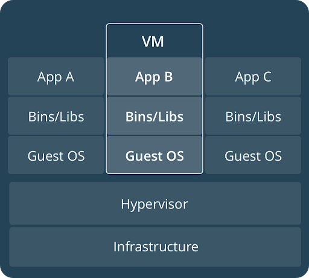
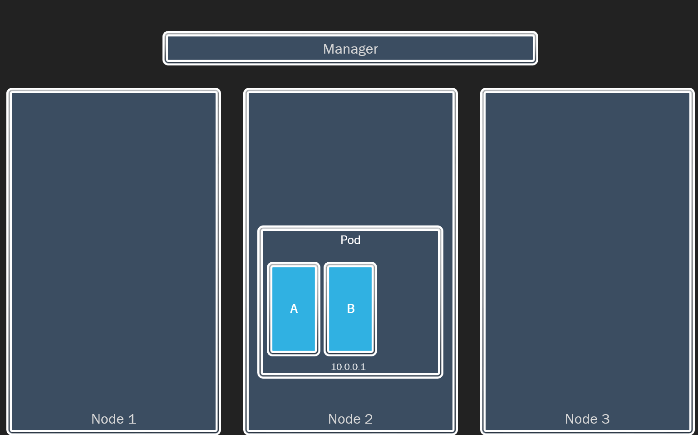

Hands on with Docker & Kubernetes
https://bit.ly/32LT4M6
James BennettEnterprise Systems, UITS
Agenda
- Overview of Docker
- Container Orchestration
- Hands-on exercises (~90 minutes)
- Where to go next
- Q&A
Docker Overview
Why Containers?
Containers are popular because they are:- Flexible
- Lightweight
- Portable
- Loosely Coupled
- Scalable
- Secure
Docker Images
Self-contained filesystem of everything needed to run an application.
Images are immutable!
Dockerfile
A text file that contains a script used to create an image. This allows various commands, including:
- FROM - specify the parent image
- COPY - copy files into the image
- RUN - run a command inside the container
- CMD - default command to run on startup
Registry
- Allows sharing images
- Docker Hub is the default registry
- Provides a library of official images
- Role-based access control to images
Containers
- A container is JUST another process on the machine
- The filesystem for the container starts from an image
- It uses namespaces and control groups (cgroups) to provide isolation
Container vs VM

Docker
- Image Builder
- Container Runtime
- REST API
- Command Line Interface

Container Orchestration
“Container orchestration is a process that automates the deployment, management, scaling, networking, and availability of container-based applications on a cluster of machines.”
Orchestration Platforms


Docker Swarm
Kubernetes
Docker Swarm
Positives
- Built into the Docker runtime
- Easy to setup
- Simple, opinionated, full-stack model
Negatives
- Arrived late
- Slow to evolve
- Unstable networking
- Not adopted by vendors
Kubernetes
- Open sourced in 2015
- Maintained by the CNCF
- General-purpose approach to container orchestration
- Very wide adoption by vendors
Kubernetes Core Concepts
Nodes & Cluster
Pods
Pods
Pods
Pods
Replica Sets
Replica Sets

Deployments
Deployments
Deployments

Deployments
Services
Services
Services
Core Concepts
- Pods
- Replica Sets
- Deployments
- Services
Labs
Lab Options
- Docker 101 (#LearnDocker): dockr.ly/dev101
- Kubernetes Basics: bit.ly/2pg8bPj
- Other Docker Labs: bit.ly/343bbNI
Where to go next
Version Control
- Dockerfile(s)
- .dockerignore
- Swarm Compose files
- Kubernetes manifests
Image Hardening
- Use reliable base images
- Depend on specific versions
- Minimize dependencies
- Image Scanning
- Never include sensitive information
- Sign trusted images
- Push to a trusted repository
CNCF Landscape
landscape.cncf.ioImprove Deployments
- Health checks & probes
- Config & secrets
- Volumes
- Resource quotas
- Autoscalers
- Ingress
- DaemonSet
Other Topics
- Namespaces & role-based Access Control
- Stateful workloads
- Batch jobs
- Helm charts
Questions?
Thanks!

James Bennett - jawbenne@iu.edu